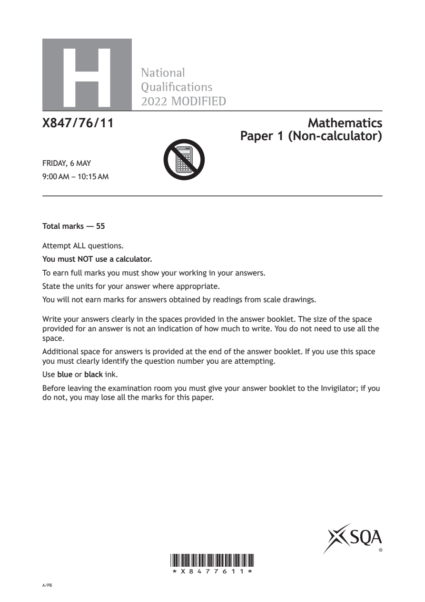
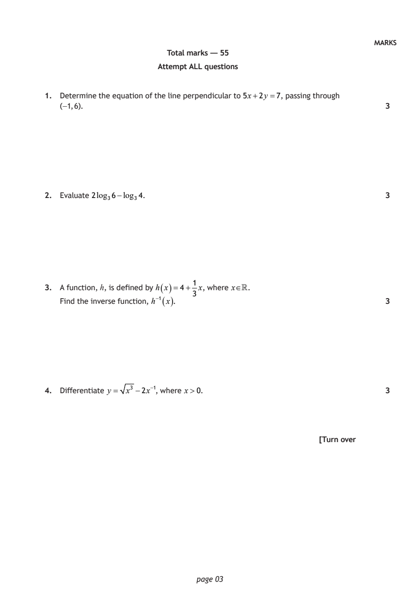
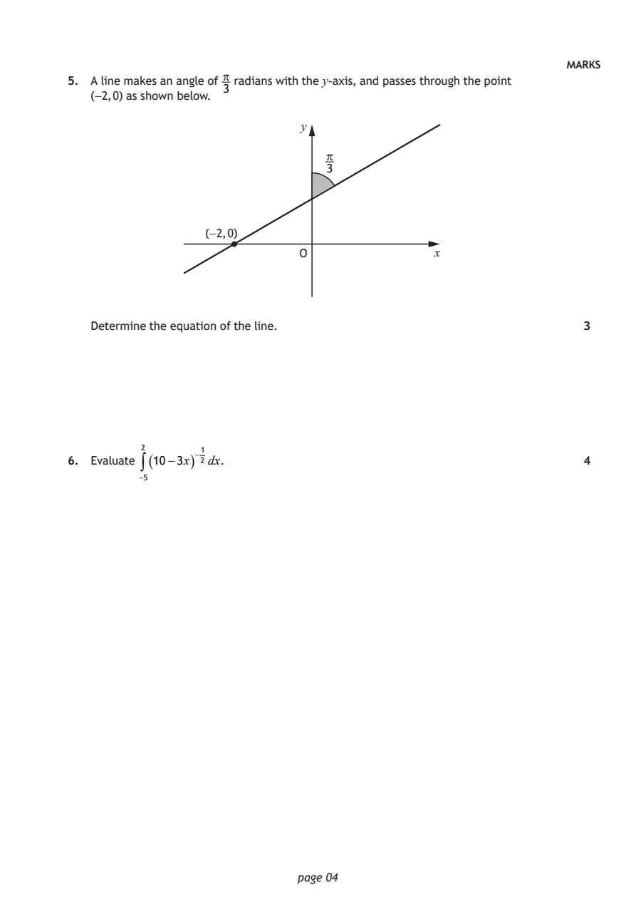
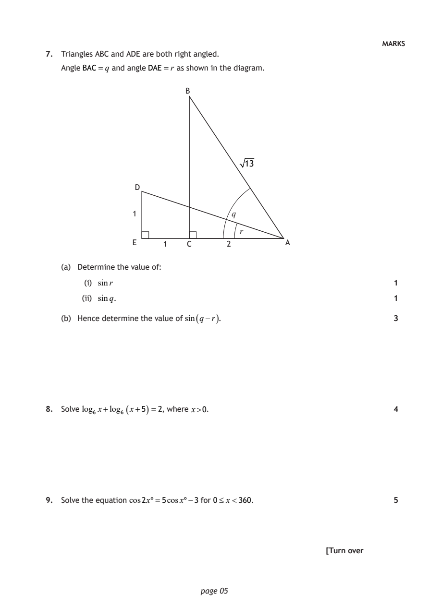
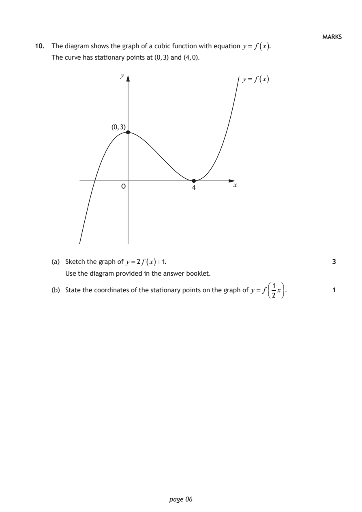
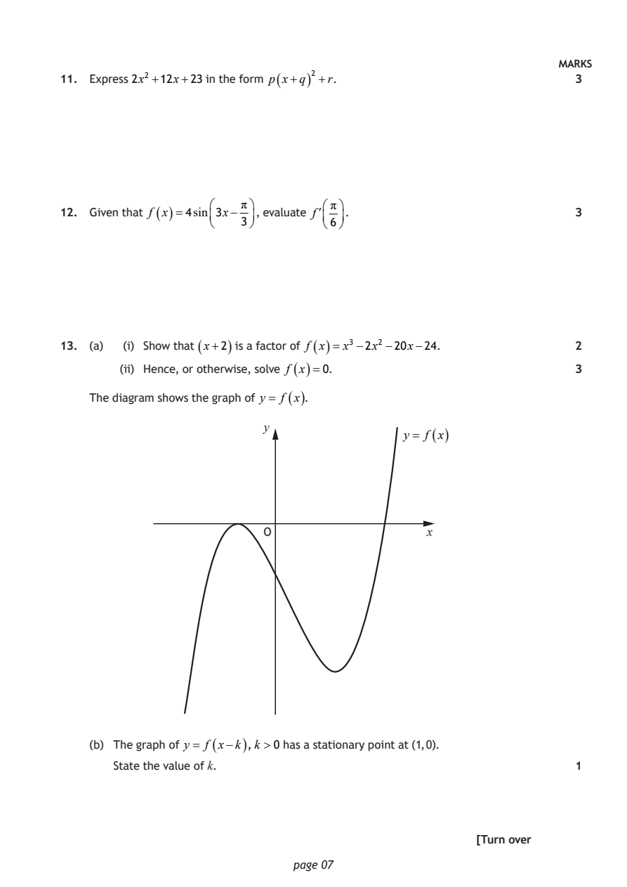
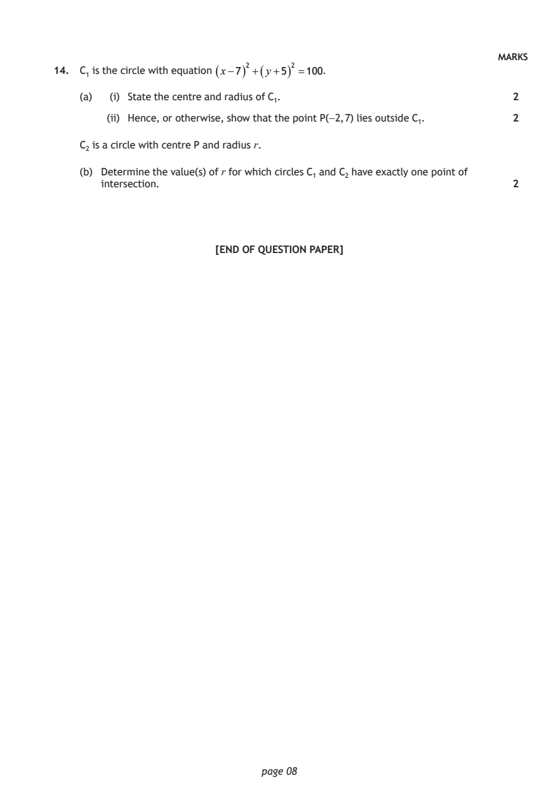

2022 Higher Mathematics - Paper 1 questions
Source: Scottish Qualifications Authority (SQA) / Qualifications Scotland. This is a StemInteract HTML companion, not an official HTML edition. Selectable text is supplied alongside original page images. Use the images or original PDF for equations, powers, fractions, vector notation, tables and diagrams; text extraction cannot fully preserve mathematical layout.
Jump to a question
PDF page 1

Selectable page text
H
National
Qualications
2022 MODIFIED
X847/76/11 Mathematics
Paper 1 (Non-calculator)
FRIDAY, 6 MAY
9:00 AM – 10:15 AM
Total marks — 55
Attempt ALL questions.
You must NOT use a calculator.
To earn full marks you must show your working in your answers.
State the units for your answer where appropriate.
You will not earn marks for answers obtained by readings from scale drawings.
Write your answers clearly in the spaces provided in the answer booklet. The size of the space
provided for an answer is not an indication of how much to write. You do not need to use all the
space.
Additional space for answers is provided at the end of the answer booklet. If you use this space
you must clearly identify the question number you are attempting.
Use blue or black ink.
Before leaving the examination room you must give your answer booklet to the Invigilator; if you
do not, you may lose all the marks for this paper.
©
*X8477611*
A/PBPDF page 2

Selectable page text
FORMULAE LIST
Circle
The equation x² + y²+ 2gx + 2fy + c=0 represents a circle centre (−g, −f ) and radius g² + f ² −c.
The equation (x−a)² + (y−b)² =r² represents a circle centre (a, b) and radius r.
Scalar product a.b= a b cos θ, where θ is the angle between a and b
a₁ b₁
or a.b=a₁b₁+a₂b₂ +a₃b₃ where a= a₂ and b= b₂ .
a₃ b₃
Trigonometric formulae sin(A±B)=sinA cosB ± cos AsinB
cos(A±B)=cosAcosB ∓ sinAsinB
sin2A =2sinAcosA
cos2A=cos²A−sin²A
=2cos²A−1
=1−2 sin²A
Table of standard derivatives
f(x) f′(x)
sinax acosax
cosax −asinax
Table of standard integrals
f(x) ∫ f(x)dx
1
sinax − cosax + c
a
1
cosax sinax + c
a
page 02PDF page 3
Paper 1, Question 1Paper 1, Question 2Paper 1, Question 3Paper 1, Question 4
Selectable page text
MARKS
Total marks — 55
Attempt ALL questions
1. Determine the equation of the line perpendicular to 5x+2y =7, passing through
(−1, 6). 3
2. Evaluate 2log₃6−log₃4. 3
1
3. A function, h, is defined by h ( x )=4+ x, where x.
3
( )
Find the inverse function, h⁻¹ x . 3
4. Differentiate y = x³ −2x⁻¹, where x>0. 3
[Turn over
page 03PDF page 4
Paper 1, Question 5Paper 1, Question 6
Selectable page text
MARKS
5. A line makes an angle of radians with the y-axis, and passes through the point
3
(−2, 0) as shown below.
y
3
(−2, 0)
O x
Determine the equation of the line. 3
2
6. Evaluate ∫( 10−3x)⁻²¹dx. 4
−5
page 04PDF page 5
Paper 1, Question 7Paper 1, Question 8Paper 1, Question 9
Selectable page text
MARKS
7. Triangles ABC and ADE are both right angled.
Angle BAC =q and angle DAE=r as shown in the diagram.
B
13
D
1 q
r
E 1 C 2 A
(a) Determine the value of:
(i) sinr 1
(ii) sinq. 1
(b) Hence determine the value of sin ( q−r ) . 3
8. Solve log₆ x+log₆ ( x+5 ) =2, where x>0. 4
9. Solve the equation cos2x°=5cosx°−3 for 0≤ x<360. 5
[Turn over
page 05PDF page 6
Paper 1, Question 10
Selectable page text
MARKS
10. The diagram shows the graph of a cubic function with equation y = f ( x ).
The curve has stationary points at (0, 3) and (4, 0).
y
y = f ( x )
(0, 3)
O 4 x
(a) Sketch the graph of y =2f ( x )+1. 3
Use the diagram provided in the answer booklet.
1
(b) State the coordinates of the stationary points on the graph of y = f x. 1
2
page 06PDF page 7
Paper 1, Question 11Paper 1, Question 12Paper 1, Question 13
Selectable page text
MARKS
11. Express 2x² +12x+23 in the form p ( x+q ) ² +r. 3
π π
12. Given that f ( x )=4sin3x− , evaluate f . 3
3 6
13. (a) (i) Show that ( x+2 ) is a factor of f ( x )= x³−2x² −20x−24. 2
(ii) Hence, or otherwise, solve f
(
x
)=0.
3
The diagram shows the graph of y = f ( x ) .
y
y = f ( x )
O x
(b) The graph of y = f ( x−k ) , k >0 has a stationary point at (1, 0).
State the value of k. 1
[Turn over
page 07PDF page 8
Paper 1, Question 14
Selectable page text
MARKS
14. C₁ is the circle with equation ( x−7 ) ² +( y+5 ) ² =100.
(a) (i) State the centre and radius of C₁. 2
(ii) Hence, or otherwise, show that the point P(−2, 7) lies outside C₁. 2
C₂ is a circle with centre P and radius r.
(b) Determine the value(s) of r for which circles C₁ and C₂ have exactly one point of
intersection. 2
[END OF QUESTION PAPER]
page 08